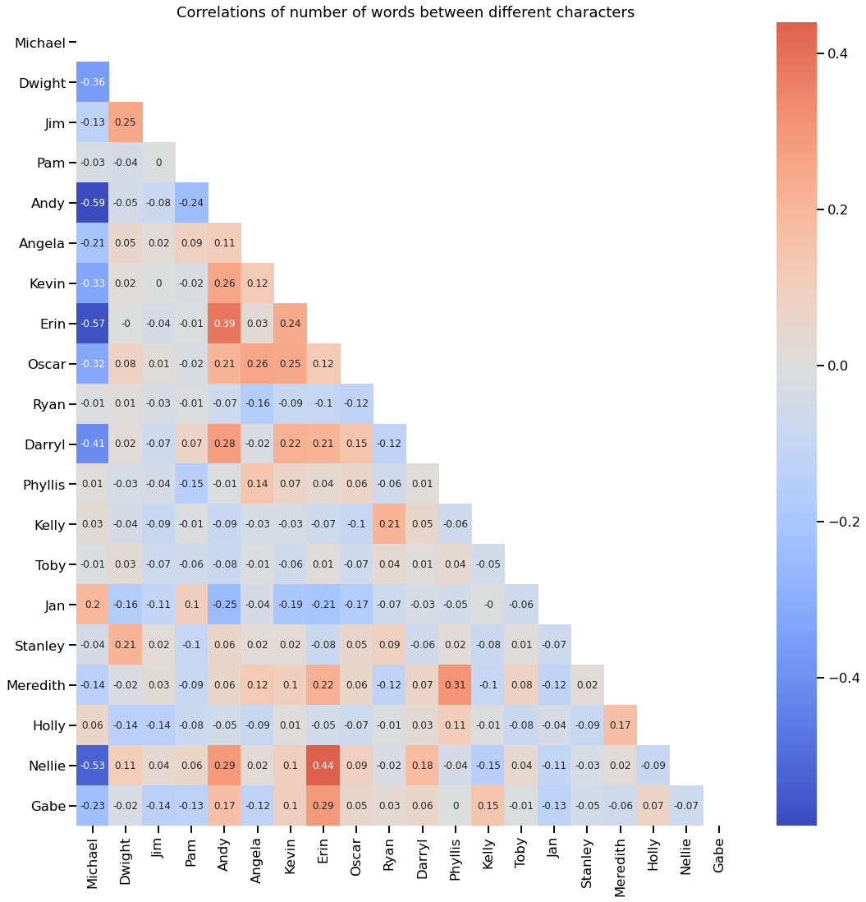
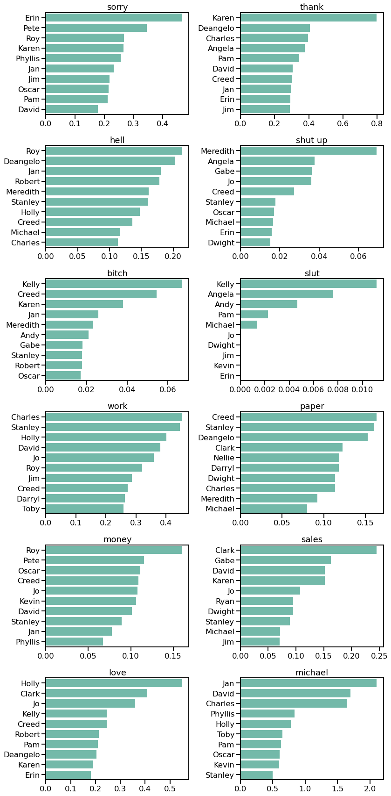

“Sometimes I’ll start a sentence, and I don’t even know where it’s going. I just hope I find it along the way.” - Michael Scott
This project is about "The Office", American sitcom showing everyday life of a typical office. One who saw this sitcom probably noticed that engagement and hilarity of episodes are not constant in time and slowly degrade through seasons. Of course, you can find a plenty of hypothesis on YouTube explaining why this fading happens. But I ask myself: is it possible to explain episode ratings using data science approach? Are there features that influence ratings the most? Can I create a recipe for ideal episode? Those were my motives to start working on this project.
In this post I will show you my main results and some code I use. To see the details of data processing and modeling as well as more results, see my jupyter notebook.
P.S. This is learning project, so I didn't check if there is similar analysis on the web and therefore do not claim any priority or uniqueness.
"Wikipedia is the best thing ever. Anyone in the world can write anything they want about any subject. So you know you are getting the best possible information." - Michael Scott
To predict episode popularity I needed to have information about episode's rating and of course some data on the episode content. I decided to use IMDB rating to characterize score of each episode. Here I found nice dataset with this information already extracted and saved as .csv. To describe each episode I used it's script and names of director and writer who created it. I was lucky to find this library, called schrute, containing lines of each character for each episode. It was nice to work with this library since one can easily transpose it into pandas data frame format.
To summarize, I had following initial data for each episode:
Season, episode number, title episode description, air date do not help to construct ideal episode, so I didn't use it in my analysis. All remaining properties were used in episode characterization.
Main obstacles I faced in data preparation phase was inconsistency in episode numeration in databases. In schrute database all double series count as one. In database with episode rating some double episodes count as one, while others as two. I decided to use schrute numeration since I don't know how to separate script for double episode in two parts (except by doing it by hand). I merged some episodes in the episode database and changed numeration for the rest. As soon as all numeration was fixed, I was able to combine this two databases in one.
Data cleaning included transformation of writer and director into categorical type and extracting month of release from air date.
“Okay, too many different words coming at me from too many different sentences.” - Michael Scott
At this step I used script information (lines of each character in each episodes) to extract some meaningful features which could help to characterize each episode. To work with text I used nltk library. I should point out that my analysis of the text is purely mechanical (counting the word) instead of real language processing, since, as I feel, deep semantic analysis is a topic for another project, a big one (“That’s what she said.” Michael Scott).
Preprocessing of text included tokenisation, deleting non-alphabetic symbols and sometimes deleting stop words (common words, which do not provide useful information). My function for text preparation.
# returns bag of words
def prepare_text(text, stop=True):
words = nltk.word_tokenize(text)
words=[word.lower() for word in words if word.isalpha()]
if stop:
words = [w for w in words if not w in stop_words]
return words
First feature I wanted to extract was the number of words for each episode. I didn't delete stop words for this calculation.
df['words'] = 0
for season in range(1,10):
episodes = np.sort(df[df.season==season].episode.unique())
for episode in episodes:
text_row = ' '.join( word for word in script[(script.season==season) & (script.episode==episode)].text)
text = prepare_text(text_row,stop=False)
df.loc[(df.season==season) & (df.episode==episode),'words'] = len(text)
There are two distinct areas in distribution of words, corresponding to normal-length episodes and double episodes. For normal episodes mean number of words is 2812, for double episodes it is 5329 (median is 5200). It means, in double episode characters do not speak twice as much as in normal, but slightly less.

Another interesting feature is the number of words for each character. Below total number of words across all episodes is shown for most talkative characters.

It is clear, that Michael is champion in talking. Even though Michael has been absent for two seasons, he talks much more than characters present all the time. Looking at this plot one can easily separate the primary characters from the secondary ones. Primary characters (Michael, Dwight, Jim, Pam and Andy) talks at least twice as much as secondary.
Next step was to count number of words for each characters in each episode. I made it for top 30 most talkative characters. To be able to easily compare double and normal episodes, I normalized number of words said by character by total number of words in this episode. I ended up with a percentage of how many words each character said relative to all the words said in the episode.
for person in characters:
df[person + '_words'] = np.nan
for season in range(1,10):
episodes = np.sort(df[df.season==season].episode.unique())
for episode in episodes:
text_row = ' '.join( word for word in script[(script.season==season) & (script.episode==episode) & (script.character==person)].text)
# do not delete stop words
text = prepare_text(text_row, stop=False)
# total words in the episode
total_words = df[(df.season==season) & (df.episode==episode)].words
# calculate precentage and save in df
df.loc[(df.season==season) & (df.episode==episode),[person + '_words']] = 100*len(text)/total_words
In the figure below number of words of most talkative characters is shown as fraction of total words in all episodes of a given season. One can clearly see that share of airtime when Michael speaks decreases almost linearly with the time. But as long as Michael stayed on the show, the free time was taken up by secondary characters, not the main. That is, the airtime of Dwight, Jim and Pam didn't change a lot. Only during two last seasons Dwight and Andy involvement increased drastically in an attempt to fill in the emptiness after Michael's leaving.

It was also interesting to me, how the number of words for each characters correlates with the number of words for other characters. Visualization of correlation matrix is shown below for 20 most talkative characters.
The first thing that catches my eye is that Michael has mostly zero or negative correlations with people. It seems to be true, because Michael tries to dominate in all conversations and and tends to occupy all the air time. The only positive correlations he have are with Jan and Holly with whom he had romantic relationships.
But this correlation table is averaged through all the seasons. For each season picture differs cardinally. For example, let's look at Michael and Dwight fraction of words (defined similar to the table above) for first six seasons. In first and third season we can see clear linear dependency: the more Michael talks the less Dwight talks and vice versa. In season 2 and 4 the speech of Dwight occupies approximately the same part of the episode and doesn't correlate with Michael words


Another feature that could be important in rating prediction is number of dialogues between characters. In schrute dataset there are only sequences of phrases told by character. There are no scene descriptions or timing of each line. So, in searching for dialogues I could only rely on sequence of lines. Here I assumed that if characters' phrases alternate, these characters talk to each other. I counted as a dialog a set of at least 4 lines of two characters where characters' lines alternate. Using this technique I may count last line of the previous dialog as the first line of the following one, so, the error of number of lines in dialog could be +- 2 lines.
# create array of names in order of they appearance in script
def who_is_speaking(df, season, episode):
script_tmp = df[(df.season==season) & (df.episode==episode)]
speaking = []
for index in script_tmp.index:
speaking.append(script_tmp[script_tmp.index==index].character.values[0])
return speaking
characters_dialog = []
# create array with column's name
# create empty column in database
for name1 in characters:
for name2 in characters[characters.index(name1) + 1:]:
names = np.sort([name1, name2])
column_name = names[0] + '_' + names[1] + '_dialog'
df[column_name] = 0
characters_dialog.append(column_name)
df['dialog_mean_length'] = np.nan
df['number_of_dialog'] = np.nan
for season in range(1,10):
episodes = np.sort(df[df.season==season].episode.unique())
for episode in episodes:
# save all speakers
speaking = who_is_speaking(script,season, episode)
dialog_length = []
i = 0
while i < len(speaking)- 1:
names = np.unique(speaking[i:i+2])
# count dialogs only for 20 most talkative characters
if all([name in characters[:20] for name in names])==False:
i += 1
continue
# check that two different persons speak
if len(names)==2:
max_shift = len(speaking) - i
# search for end of dialog
for shift in range(2,max_shift):
new_names = np.unique(speaking[i:i+shift])
#condition to stop search : new name appears
if any([name not in names for name in new_names]):
break
dialog_length.append(shift-1)
# save only dialog with 4 replicas
if shift > 4:
names = np.sort(names)
key = names[0] + '_' + names[1] + '_dialog'
df.loc[(df.season==season) & (df.episode==episode), [key]] += shift-1
i += shift - 1
# if speaks only one person: go to to next replace
else:
i += 1
# save statistics of dialog
df.loc[(df.season==season) & (df.episode==episode), 'dialog_mean_length'] = np.mean(dialog_length)
df.loc[(df.season==season) & (df.episode==episode), 'number_of_dialog'] = len(dialog_length)
# normalisation of dialog number for double series
df.loc[df.double == 1,['number_of_dialog']] = df[df.double == 1].number_of_dialog.apply(lambda x : x/2)
Let's look how dialogues change with the time. It seems that from season to season dialogues become shorter and in each episode number of different dialogues between different characters increase. So, in late seasons there are a lot of short dialogues.
Keeping in mind Michael's talkativeness one could expect all Michael's dialogues to be on the top of the list. But the second and the third most common dialogues are with Jim. This is probably because Michael speaks a lot by himself and less in dialogues (a negative correlations of spoken words between Michael and other characters proofs this explanation).

Using dialog information we can have some conclusion about characters' relationships. For this I drew chord diagram of dialog lengths between characters, where width of lines represents number of lines. You can see below my code for creation chord diagram. At first step I saved dialog information in graph format. For simplicity and readability I used threshold by 5% of the longest dialog (between Michael and Dwight), so, you see only dialog with total lines more than 113. The second part is drawing the chord diagram using nxviz library.
# creating graph where nodes are characters, edges - dialogues between them
P = nx.Graph()
treshold = 0.05 * df.Dwight_Michael_dialog.sum()
arr = []
for name in characters[:20]:
P.add_node(name)
for cols in characters_dialog_non_zero:
# choose only one of the 20 main characters
if name in cols:
other_name = cols.replace(name,'').replace('_dialog','').replace('_',"")
if other_name in characters[:20]:
# claculate weigth as sum of all lines in all dialogues
weight = df.sum()[cols]
# add to graph only relatively long dialog
if weight > treshold:
P.add_edge(name, other_name, weight = weight)
arr.append(df.sum()[cols])
# rescaling weight
for u,v in P.edges:
P[u][v]['weight_scaled'] = P[u][v]['weight']/100
# creating properties for nodes
for v in P:
P.nodes[v]["name"] = v
P.nodes[v]["size"] = 0.5
P.nodes[v]["group"] = groups[v]
# drawning the chord diagramsave
fig, ax = plt.subplots(figsize=(12,12))
pos = nv.nodes.circos(P, group_by='name',size_by='size',color_by='group')
annotate.circos_labels(P, group_by='name')
nv.edges.circos(P, pos)
# edge style
et = nv.utils.edge_table(P)
edge_color = nv.edges.edge_colors(et, nt=None, color_by=None, node_color_by=None)
alpha = nv.edges.transparency(et, alpha_by=None)
patches = nv.lines.circos( et, pos, edge_color=edge_color, alpha=alpha, lw=et["weight_scaled"], aes_kw={"fc": "none"} )
for patch in patches:
ax.add_patch(patch)
nv.plots.rescale(P)
nv.plots.aspect_equal()
nv.plots.despine()
Color denotes groups of characters divided by the number of words spoken: green - Michael, yellow - other main characters (total number of spoken words more than 40000), lilac - secondary characters with almost equal number of spoken words (about 10000), red - secondary characters with number of total words less than 9000.
The most social person again is Michael. Most of Michael dialogues happen with Dwight. With Jim or Pam he talks twice less than with Dwight. Among secondary characters most popular conversation partners for Michael are Jan and Holly.
After Michael the most active connections are dialogues of Jim with Pam and Dwight. Having such active dialogues with Pam and Dwight Jim is quite uncommunicative with other collegues. Dwight and Andy are more social active, having a lot of connections with secondary characters. It is also funny to note, that Toby performs duties of human resource representative very poorly, having conversations only with his boss.
As a matter of idle interest I tried to understand the nature of each character by her words. For this I counted appearance of some words in character's speech and normalized it by total words said by the character. By doing this I could see what fraction of character's speech is taken up by the words.
By counting appearances of 'sorry' I found out that Erin is the most apologizing character. By counting appearances of 'thank' I tried to find most polite character, and it was Angela (or probably I just found the most passive-aggressive character). Title of the most rude character goes to Meredith and Kelly. Surprisingly, Stanley is the one who talks the most about work and day to day duty (I mean paper). It is not that unexpected actually since Stanley doesn't talk about his private life and work is the only thing that unites him with the others. Oscar, as a responsible accountant, talks about money a lot. Women are in the lead when it comes to talking about love, but most romantic among them is Holly. Finally, Jan is the one obsessed the most about Michael (Phyllis, what are you doing in the second place?).
Another way of character's characterization is to count most distinctive words they used. Simple counting of word's frequency will not be so informative here, since each character probably will have the same most frequent word (such as 'know', 'okay', 'right). I used tf-idf (term frequency-inverse document frequency) algorithm to find out words typical only to the character. For example, most frequent character's word used a lot by other characters would have really low tf-idf score, while word used only by this character will have high tf-idf score. Shown below are word clouds of most distinctive words used by main characters, with the size of word being correspondent to its tf-idf score.
I didn't show here all the features I extracted. If you are interested in details, pleace, look at jupyter notebook (link). The other features I calculated was:
“Would I rather be feared or loved? Easy. Both. I want people to be afraid of how much they love me.” - Michael Scott
Before answering that question let's look at the rating distribution. Histogram of ratings seems to be symmetric with distinctive tails. There are no outliers in this distribution. Mean rating is about 8.2, median is the same. Time evolution of ratings shows a clear maximum for 3 and 4 season and quite remarkable decline in 8 and 9 seasons.

Let's calculate correlation with rating for each feature discussed before. Only strong correlations are shown below:
0.426 Michael_words
0.369 double
0.32 words
0.315 crying
0.229 director_Paul_Feig
0.221 writer_Greg_Daniels
0.205 sigh
0.204 Michael_about_Jan
-0.216 writer_Owen_Ellickson
-0.218 Nellie_Phyllis_dialog
-0.225 Andy_Nellie_dialog
-0.233 Jim_Nellie_dialog
-0.233 director_Claire_Scanlon
-0.288 Dwight_Nellie_dialog
-0.296 Robert_words
-0.302 Andy_Erin_dialog
-0.338 Andy_words
-0.362 Erin_words
-0.425 Nellie_words
It seems viewers really like when Michael is talking and equally don't like when Nellie is talking. Erin's and Andy's talking are not highly scored as well. There are high correlations with number of words in episode and the length of episode (double or not). As you can see in the figure below, all double episodes are scored very high. But for normal length episodes there is almost no correlation of the number of words and the rating (df[df.double==0].corr().rating.words = -0.006, df[df.double==1].corr().rating.words = -0.117).
There are several writers and directors who have strong correlation with ratings. For example, we can conclude that viewers like episodes filmed by Paul Feig very much. As a director he filmed 14 episodes with mean rating 8.7, 12 of them having rating higher than mean value 8.2.
Such actions as crying and sigh also have quite high correlation with rating. Does it mean that viewers like when characters suffer?
"This is a dream that I've had…since lunch…and I'm not giving it up now." - Michael Scott
We can finally get to the most interesting part, namely the creation of model to predict rating. The main criteria here for me is the interpretability of the model, so the most obvious choice was regression model. I used statsmodels library with ordinary least squares fitting. To test my model's performance I split all episodes into training and testing datasets.
After extensive feature engineering I had 306 features I could use for model. It is too much to have an easily interpretable model, so I spent some time searching for the most important features. At first I tried to choose features using my domain knowledge and some intuition. Of course I realized that this way is not optimal at all, that's why I also used random forest algorithm as an alternative way to find those features.
Main selection criteria were correlation with rating and number of appearances in episodes. I chose features with absolute value of correlation coefficient higher than 0.1 and which appear in at least 60 episodes (2/3 of total number of episodes). The latter rule I violated in case of directors and writers having high negative correlation coefficient, since such authors work only on few episodes.
After collection of all features satisfying these criteria, I checked them for inter-correlation and deleted some. The remaining features were: double, what_she_said, leaving, party, meeting, news, crying, sigh, kiss, director_Paul_Feig, director_Ken_Kwapis, writer_Charlie_Grandy, Michael_words, Creed_words, Jim_about_Pam, Jim_about_Dwight.
These features were used in linear regression model with target value 'rating'. Linear regression model was fitted with R square=0.433, root mean square error computed for test data was 0.456. Distribution of residuals was shifted to positive values reflecting tendency of predicted values to be higher than real. Another drawback of this set of features is high p-value of some of them underlining that regression coefficients of those features was probably chosen by chance.
I excluded features with high p-value and this cleaning slightly reduced R square and improved RMSE (0.445). Fitted coefficients:
| leaving | 4.208669 |
| double | 0.545382 |
| crying | 0.113989 |
| Jim_about_Dwight | 0.097600 |
| Michael_words | 0.014956 |
| news | -1.546528 |
| Intercept | 7.649490 |
So, in this model the rating value is mostly defined by how much word "leaving" was used in character's speech. It is also quite important for high rating for word 'news' to be used as little as possible. Double episodes have higher rating. And it seems very important for an episode to include crying. Although the model has a pretty good predictive power (up to half of score accuracy), the strong dependence on the use of specific words seems very suspicious and not much explaining to me. That's why I used random forest algorithm to find better optimized set of features.
I used random forest from sci-kit learn library. All 306 features were used as input in the model. Random forest algorithm provides quite the same RMSE (0.448), distribution of residuals is not offset with respect to zero but has long tail at negative values meaning that we underestimate rating for several episodes.
Among most important features were the total number of words and the number of Michael words. I took 6 most important features for regression model and ended up with RMSE 0.44 and quite symmetric but a little shifted residuals.

| crying | 0.131839 |
| Nellie_words | -0.048064 |
| Andy_words | -0.010342 |
| laughing | 0.008227 |
| Michael_words | 0.007703 |
| words | 0.000186 |
| Intercept | 7.476538 |
So, the results are quite funny: to have high rating episode should contain a lot of crying and laughing, there should be Michael but not Nellie or Andy. To find the best episode according to this model I applied filter maximizing crying in episode. It appears to be episodes with Michael leaving and final episode. Both of them have really high rating.
"I am running away from my responsibilities. And it feels good." - Michael Scott
Of course, my analysis does not pretend to be complete and deep. Many other episode's properties can influence the rating, for example number of good jokes or dramatic plot twists. But I am happy with my results, since using only simple word counting I was able to predict episode rating with quite good accuracy.
At the end, we are able to name most important features of episode, influencing rating. They include how much characters cry and laugh in the episode, number of words, how much Michael talks and how less Nellie and Andy talk.
Obtained equation of episode rating is follow:
rating = 7.477 + 0.123 * crying - 0.048 * Nellie_words - 0.01 * Andy_words + 0.008 * laughing + 0.0077 * Michael_words + 0.000186 * words.
Using this equation one can try to construct ideal episode scored as 10/10 by viewers. The method is simple - maximize the parameters with a positive coefficients and minimize the parameters with negative coefficients.
Let's start by putting Nellie_words and Andy_words to zero. Assume that "Goodbye, Michael" and "Finale" are episodes with maximum allowable amount of tears, so, crying would be equal to 6. Maximum 'laughing' appeared in 'Christmas Wishes' episode and was 23. I didn't want to be unrealistic and put laughing = 25. Maximum words number appeared in episode was 6029 (it was double episode), so, let's put words = 6000. Recall, that "Michael_words" feature shows what proportion of the words in the episode were said by Michael. I suggest choosing the maximum possible number, i.e. 100% of the words in episode are said by Michael. So, we can calculate rating of the best episode now:
rating = 7.477 + 0.123 * 6 - 0.048 * 0 - 0.01 * 0 + 0.008 * 25+ 0.0077 * 100 + 0.000186 * 6000 = 10.3
The episode appeared to be too good and had 10.3 out of 10. To adjust this value, we can reduce some features values. In order to make the episode realistic lets's reduce Michael word and add some Andy word. Episode with 70% of Michael (maximum value appeared in episode was 65%) words and 5% of Andy words received 10 rating.
rating = 7.477 + 0.123 * 6 - 0.048 * 0 - 0.01 * 5 + 0.008 * 25+ 0.0077 * 70 + 0.000186 * 6000 = 10.02
To sum up, the ideal episode will be double episode, containing a lot of Michael (70% of talking will be done by Michael), a lot of laughing and crying (probably most of them would be done by Michael) and just a little bit of Andy (only 5% of talking). One can choose several combinations of parameters that satisfy the highest rating. So, my recipe is not unique and you can try to construct ideal episode by yourself.